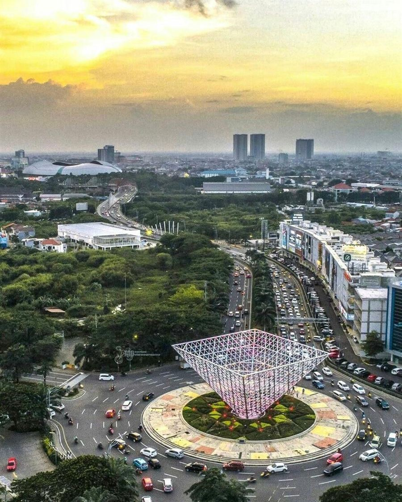
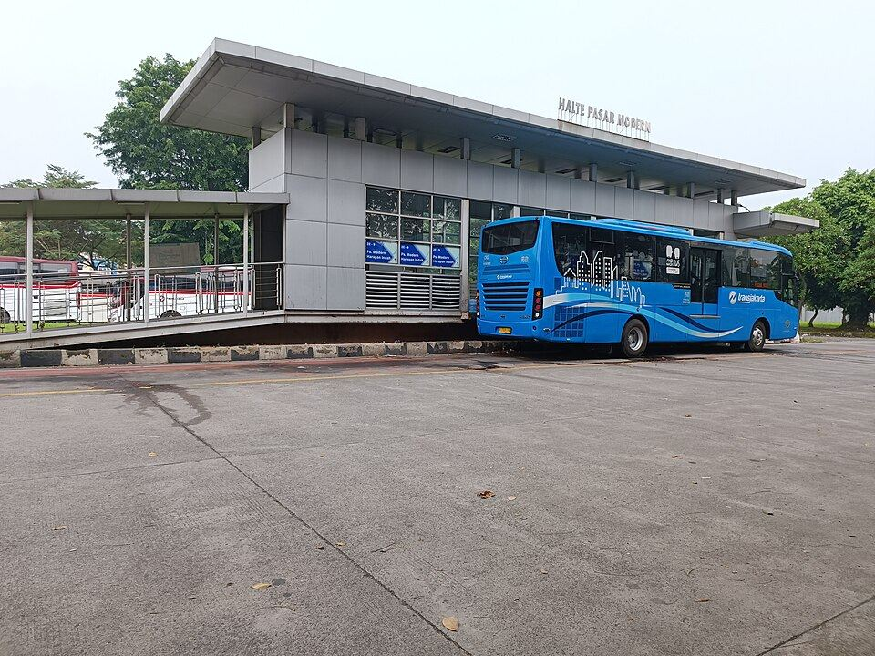
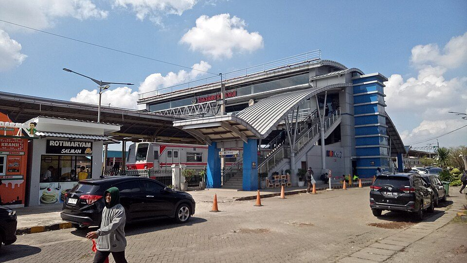

From modern urban hubs to vibrant culinary districts and historic neighborhoods across Bekasi.

Summarecon is a modern lifestyle destination with a vibrant atmosphere. Known for its upscale residential areas, shopping centers, and recreational spots, Summarecon Bekasi offers a perfect mix of city life and green spaces. It’s a great place for shopping, dining, and enjoying weekend activities with family and friends.

A well-developed and rapidly growing residential area, Harapan Indah offers a blend of modern infrastructure and peaceful living. It’s home to various parks, malls, and educational institutions, making it an ideal place for families seeking comfort and convenience while enjoying a more relaxed suburban lifestyle.
A lively area famous for its diverse culinary scene and bustling nightlife. Whether you're craving local delicacies or international cuisine, Galaxy Bekasi has a variety of food options. With its energetic vibe and convenient location, it’s a great spot to explore for young people and food enthusiasts.

Kranji known for its historical significance and traditional feel, Kranji offers a glimpse into the local culture of Bekasi. It has a more laid-back atmosphere compared to other areas, with markets, traditional food vendors, and a strong community spirit. A great place to experience the authentic side of Bekasi.